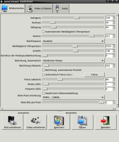
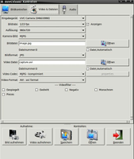

Skype HQ-Video
Dieser Artikel wurde für die folgenden Ubuntu-Versionen getestet:
Ubuntu 16.04 Xenial Xerus
Ubuntu 14.04 Trusty Tahr
Zum Verständnis dieses Artikels sind folgende Seiten hilfreich:
Dieser Artikel beschreibt, wie eine UVC-Webcam (z.B. die Logitech QuickCam Pro 9000) mit Skype "HQ-Video" versendet. Es wird davon ausgegangen, dass sich die Kamera an /dev/video0 befindet. Die konkrete Gerätebezeichnung kann (z.B. bei eingebauter TV-Karte) auch eine höhere Nummer enthalten (/dev/video1). Im Folgenden also bitte darauf achten.
Installation¶
Folgende Pakete müssen installiert werden[1]:
guvcview (universe)
uvcdynctrl (universe, fügt dynamische Kontrollen für UVC-Geräte hinzu. Dies ist notwendig, um Video mit höheren Auflösungen zu versenden.)
 mit apturl
mit apturl
Paketliste zum Kopieren:
sudo apt-get install guvcview uvcdynctrl
sudo aptitude install guvcview uvcdynctrl
Einrichtung¶
Automatische Belichtung abstellen¶
Dies ist der Trick, damit später alles einwandfrei funktioniert. Hier wird angenommen, dass die UVC-Kamera unter /dev/video0 zu finden ist. Sind jedoch mehrere Videogeräte, wie andere Webcams oder TV-Karten angeschlossen, kann man in einem Terminal[2] mit dem Befehl:
uvcdynctrl -l
herausfinden, welche Nummer die UVC-Kamera hat. Dann im Terminal folgenden Befehl ausführen:
uvcdynctrl -d /dev/video0 -s "Exposure, Auto Priority" 0
Anpassung der Einstellungen¶
Danach öffnet man in einem Editor[3] und Root-Rechten die Datei /etc/udev/rules.d/80-uvcdynctrl.rules und trägt Folgendes ein:
###########################################
# Rules for adding dynamic UVC extension unit controls to UVC devices
################################################
ACTION=="add", SUBSYSTEM=="video4linux", DRIVERS=="uvcvideo", ENV{idVendor}="$attr{idVendor}", ENV{idProduct}="$attr{idProduct}", RUN+="/lib/udev/uvcdynctrl"Kamera mit guvcview einstellen¶
Nun muss guvcview mit Root-Rechten[5] ausgeführt werden:
gksudo guvcview
Hier werden nun die Bildeinstellungen wie folgt angepasst. Wichtig dabei ist, dass alle Kästchen unter dem Reiter "Bildkontrolle" deaktiviert sind, insbesondere müssen die "Video & Dateien"-Einstellungen wie abgebildet übernommen werden. Bildeigenschaftseinstellungen wie z.B. Kontrast, Sättigung, usw. sind freiwillig.
|  |
| Bildkontrolle |
|  |
| Video & Dateien |
Skype installieren und einrichten¶
Nun installiert man Skype. Nach dem ersten Start und Login (wichtig, sonst wird die im Folgenden gebrauchte Datei nicht erzeugt) wird Skype beendet (nicht minimiert!) und die Datei /home/BENUTZER/.Skype/BENUTZER/config.xml in einem Editor bearbeitet. Hinter <Lib> muss folgendes eingefügt werden:
...
<Video>
<CaptureHeight>720</CaptureHeight>
<CaptureWidth>960</CaptureWidth>
<Device>/dev/video0</Device>
<Fps>15</Fps>
</Video>
...Nun sollte die Videotelefonie mit höheren Auflösungen funktionieren. Dabei gibt es zwei Dinge zu beachten: Ist die CPU zu langsam oder die Bandbreite ungenügend, drosselt Skype die Auflösung herunter. Die erhöhte Auflösung ist nur in eine Richtung bemerkbar. Damit beide in den Genuss des besseren Bildes kommen können, müssen also beide Gesprächspartner diese Modifikationen vornehmen, genügend Bandbreite haben und einen schnellen Rechner besitzen.
Links¶
Skype-Anleitung
 für höhere Auflösung
für höhere Auflösung Wie und warum
die Datei uvcvideo.h modifiziert werden mussErweiterte Kontrollmöglichkeiten für UVC-Kameras
, Anleitung im englischen UbuntuforumSkype - Hauptartikel
- Erstellt mit Inyoka
-
 2004 – 2017 ubuntuusers.de • Einige Rechte vorbehalten
2004 – 2017 ubuntuusers.de • Einige Rechte vorbehalten
Lizenz • Kontakt • Datenschutz • Impressum • Serverstatus -
Serverhousing gespendet von